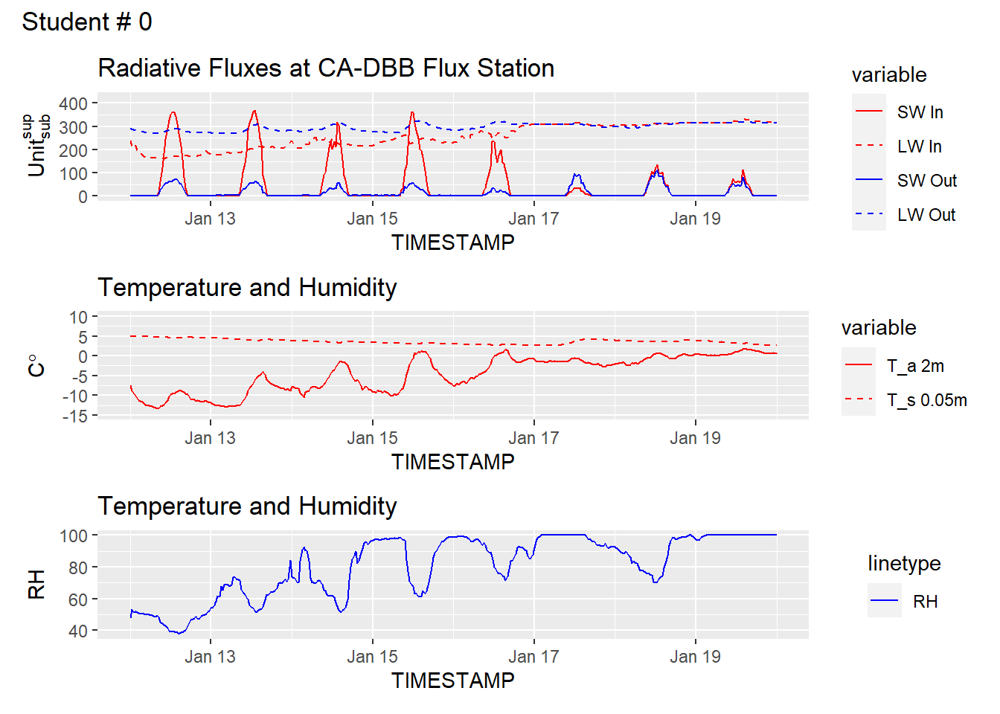

#|echo: True
library("ggplot2")
library("reshape2")
library("latex2exp")
library("patchwork")
library("tidyr")
Attaching package: 'tidyr'The following object is masked from 'package:reshape2':
smithsGEOS 300, 2024
In this lab, assignment, you’re going to look at data from the CA-DBB (aka “BB”) Eddy Covariance (EC) Station Figure 1, located in Delta, BC. Clicking on “BB” in Figure 2 will zoom to the CA-DBB station and show the site’s “Flux Footprint Climatology”, which is a concept we’ll cover later in term. Clicking the “BB” button again will toggle the footprint later on and off. You can pan/zoom to get a feel for what the site looks like. For now, we’ll stick to looking at some basic components of the site’s energy balance. In the data files (Climate_Summary_BB.csv & Climate_Summary_BB_Metadata.csv) you will find measurements multiple variables and their corresponding metadata.


#|echo: True
library("ggplot2")
library("reshape2")
library("latex2exp")
library("patchwork")
library("tidyr")
Attaching package: 'tidyr'The following object is masked from 'package:reshape2':
smithsBelow is an example showing the first few rows of the BB climate summary data. What value do you see listed for Incoming \(SW\) in the first row of the table, is this value reasonable? What is the value listed for Albedos, is this reasonable? Why or why not?
Student.Number = 0
# Import the data from github & parse the timestamp for each record
data_url='https://raw.githubusercontent.com/GEOS300/AssignmentData/main/Climate_Summary_BB.csv'
df <- read.csv(file = data_url)
df$TIMESTAMP <- as.POSIXct(df$TIMESTAMP,format = "%Y-%m-%d %H%M")
# Calculate Albedo
df$Albedo = df$SW_OUT_1_1_1/df$SW_IN_1_1_1
# Preview the table using head()
head(df) TIMESTAMP SW_IN_1_1_1 LW_IN_1_1_1 SW_OUT_1_1_1 LW_OUT_1_1_1
1 2022-01-01 00:30:00 0.05977540 263.2279 1.3582480 271.2144
2 2022-01-01 01:00:00 0.01990683 265.9375 1.1015637 274.9786
3 2022-01-01 01:30:00 0.10298067 268.3632 0.6146293 279.2283
4 2022-01-01 02:00:00 0.02578117 273.8807 0.3941725 281.6006
5 2022-01-01 02:30:00 0.03268367 277.7110 0.3813828 283.5396
6 2022-01-01 03:00:00 0.03338333 277.2797 0.3865185 284.4536
H G_1 TA_1_1_1 TA_1_2_1 TS_1 TS_2 TS_3 RH_1_1_1
1 -29.676018 -5.586875 -7.762711 -9.570630 3.630083 4.214648 7.489783 83.28255
2 NA -5.553178 -7.200051 -9.533210 3.677612 4.251830 7.531122 82.64555
3 NA -5.575220 -6.349798 -7.833451 3.669683 4.264247 7.550878 79.34940
4 NA -5.574099 -6.297862 -7.050872 3.692943 4.280375 7.569431 79.83266
5 NA -5.562795 -6.020581 -6.729948 3.708760 4.293371 7.578785 79.85045
6 -6.500002 -5.563889 -5.811514 -6.359775 3.698611 4.284091 7.576676 79.45928
P_1_1_1 PA_1_1_1 WS_1_1_1 WD_1_1_1 VPD_1_1_1 Albedo
1 0 102.3971 0.6597374 0.6597374 0.5728984 22.722525
2 0 102.4034 1.4010231 1.4010231 0.6211866 55.335956
3 0 102.4177 1.6921777 1.6921777 0.7891113 5.968395
4 0 102.4485 1.8559053 1.8559053 0.7737166 15.289165
5 0 102.4614 2.0136266 2.0136266 0.7896050 11.668912
6 0 102.4637 2.0015748 2.0015748 0.8178825 11.578188The plot below shows data from the January 2024 cold-snap (Jan 12 to Jan 19) and snowstorm (Jan 17) during which record low temperatures were observed and over 25cm of snow was received across the Metro Vancouver area. Traces traces of the four radiation component, air & soil temperature, and relative humidity are shown. Looking at the trace below - what stands out to you? Comment on the progression of each radiative component over time, using the temperature and humidity data to support your discussion. Do you see any issues in the data? If so, what is a possible explanation?
Start ='2024-01-12 0000'
End ='2024-01-20 0000'
Selection <- df[which((df$TIMESTAMP >= Start) & (df$TIMESTAMP <=End)),]
options(repr.plot.width=8, repr.plot.height=10)
plot_radiation <- melt(
Selection[,c('TIMESTAMP','SW_IN_1_1_1','LW_IN_1_1_1','SW_OUT_1_1_1', 'LW_OUT_1_1_1')],
id="TIMESTAMP")
p1 <- ggplot(plot_radiation, aes(x = TIMESTAMP, y = value, group = variable)) +
geom_line(aes(color = variable,linetype = variable)) +
scale_color_manual(labels = c('SW In','LW In','SW Out','LW Out'),values = c('red','red','blue','blue')) +
scale_linetype_manual(labels = c('SW In','LW In','SW Out','LW Out'), values = c("solid","dashed","solid","dashed"))+
labs(y = TeX(r"($Unit_{sub}^{sup}$)"))+
ylim(0,425)+
ggtitle('Radiative Fluxes at CA-DBB Flux Station')
plot_temp <- melt(
Selection[,c('TIMESTAMP','TA_1_1_1','TS_1')],
id="TIMESTAMP")
p2 <- ggplot(plot_temp, aes(x = TIMESTAMP, y = value, group = variable)) +
geom_line(aes(color = variable,linetype = variable)) +
scale_color_manual(labels = c('T_a 2m','T_s 0.05m'),values = c('red','red')) +
scale_linetype_manual(labels = c('T_a 2m','T_s 0.05m'), values = c("solid","dashed"))+
labs(y = TeX(r"($C\degree)"))+
ylim(-15,10)+
ggtitle('Temperature and Humidity')
p3 <- ggplot(Selection, aes(x = TIMESTAMP, y = RH_1_1_1,lty = 'RH')) +
geom_line(color='blue') +
labs(y = 'RH')+
ggtitle('Temperature and Humidity')
p1 / p2 / p3 + plot_annotation(sprintf('Student # %i',Student.Number))
The maximum \(SW_\downarrow\) observed during this time period was 369.34064 at 2024-01-13 13:00:00. Pacific Standard Time (PST). The CA-DBB station is located at 49.129 \(^{\circ}\) N -122.985 \(^{\circ}\) W. Using the equations from lecture, calculate the Local Apparent Time (LAT), solar declination \(\delta\), solar zenith angle \(Z\), and extraterrestrial irradiance \(I_ex\) for this observation period. Given the value of \(I_ex\), compared to observed \(SW_\downarrow\), what is the approximate atmospheric extinction attenuation coefficient for this day.
# Insert your code here# Insert your code here